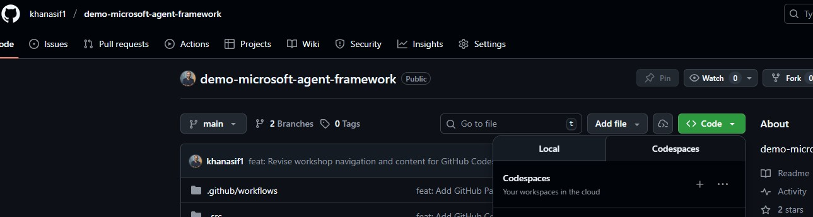

Module 2: Environment Setup
Setting up GitHub Codespaces for the multi-agent orchestrator
⏱️ Duration: 10 minutesStep 1: Navigate to the Repository
We'll use GitHub Codespaces to create a consistent development environment with all dependencies pre-configured.
Navigate to: https://github.com/khanasif1/demo-microsoft-agent-framework
Click "Sign in" in the top-right corner if you're not already logged into GitHub.
Step 2: Launch Codespaces
Now let's create your cloud development environment:
-
Click the Green "Code" Button
You'll see it near the top of the repository page.
The Code button dropdown showing the Codespaces tab
-
Select the "Codespaces" Tab
In the dropdown menu, click on the "Codespaces" tab (not "Local").
-
Click "Create codespace on main"
This starts building your development environment.
First Time Setup: The first launch takes 2-3 minutes as it builds the environment. Subsequent launches are much faster (~30 seconds).
Step 3: Welcome to Your Cloud IDE!
Once Codespaces finishes building, you'll see VS Code running in your browser:
Your Codespaces workspace with VS Code in the browser
Understanding the Interface
| Area | Description |
|---|---|
| Explorer (Left) | File browser showing all project files |
| Editor (Center) | Where you view and edit code files |
| Terminal (Bottom) | Command line interface for running commands |
| _src Folder | Contains all our sample code |
📂 Step 4: Navigate to Advanced Project
Let's navigate to the agentConcurrentOrchestrator sample under _src/useKey:
Terminal Command
cd _src/useKey/agentConcurrentOrchestratorVerify you're in the right directory by listing the contents:
Terminal Command
ls -laYou should see:
.envSample # Environment variable template
README.md # Project overview
agentApp.py # Main FastAPI application
main.py # Entry point for the orchestrator
requirements.txt # Python dependencies
tools/ # Agent tools directory
static/ # Web UI files📦 Step 5: Install Dependencies
Install the project-specific dependencies for the concurrent orchestrator:
Terminal Command
pip install -r requirements.txtThis installs additional packages needed for the multi-agent system:
- fastapi - Modern web framework for building APIs
- uvicorn - ASGI server for running FastAPI
- aiohttp - Async HTTP client for web scraping
- beautifulsoup4 & lxml - HTML parsing for news extraction
- python-multipart - For handling form data
🔐 Step 6: Configure Azure OpenAI
Set up your Azure OpenAI credentials for the agent orchestrator.
Step 1: Copy Environment Template
Terminal Command
cp .envSample .envStep 2: Edit Environment File
Open the .env file and add your Azure OpenAI credentials:
Terminal Command
code .envUpdate the file with your Azure OpenAI details:
# Azure OpenAI Configuration
AZURE_AI_PROJECT_ENDPOINT=https://your-resource.openai.azure.com/
AZURE_AI_API_KEY=your-api-key-here
AZURE_OPENAI_API_VERSION=2024-02-15-preview
AZURE_AI_MODEL_DEPLOYMENT_NAME=gpt-4o🔍 Step 7: Verify Project Structure
Let's confirm all the required files are in place for the advanced orchestrator:
Terminal Command
tree -L 3You should see this structure:
├── requirements.txt # Dependencies
├── .env # Your Azure config
├── main.py # Orchestrator entry point
├── agentApp.py # FastAPI orchestrator app
├── README.md # Project overview
├── tools/ # Agent tools
│ ├── __init__.py
│ ├── base_agent.py # Abstract base class
│ ├── bbc_news_agent.py # BBC scraper
│ └── techcrunch_agent.py # TechCrunch scraper
└── static/ # Web interface
├── index.html # Dashboard UI
🧪 Step 8: Test Installation
Verify everything is working by doing a quick test of the Python environment:
Terminal Command
python -c "import fastapi, aiohttp, bs4; print('All dependencies installed successfully')"Test Azure OpenAI connectivity:
Terminal Command
python -c "
import os
from dotenv import load_dotenv
load_dotenv()
endpoint = os.getenv('AZURE_AI_PROJECT_ENDPOINT')
api_key = os.getenv('AZURE_AI_API_KEY')
if endpoint and api_key:
print('Azure OpenAI configuration found')
print(f'Endpoint: {endpoint}')
print('API Key: [CONFIGURED]')
else:
print('Missing Azure OpenAI configuration')
"🎯 What's Next?
Great! Your development environment is ready. Here's what we've accomplished:
✅ Codespace Ready
GitHub Codespace with pre-configured Python environment
✅ Dependencies Installed
FastAPI, aiohttp, BeautifulSoup, and all required packages
✅ Azure OpenAI Configured
Environment variables set for GPT-4 model access
✅ Project Structure
All tools, agents, and web interface files in place
In the next module, we'll dive deep into the code and understand how the orchestrator coordinates multiple agents.